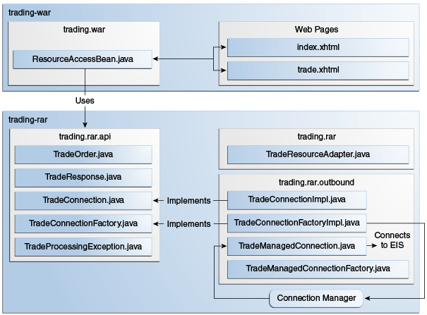

>> BUY 1000 ZZZZ MARKET
<< EXECUTED #1234567 TOTAL 50400.00 FEE 252.00
El Ejemplo trading
El ejemplo de trading demuestra cómo implementar y usar un adaptador de recursos de
salida simple que envía solicitudes a un EIS heredado usando un socket TCP. El ejemplo demuestra
el escenario de la Figura 56-1 y consta de los siguientes módulos:
-
trading-eis: Un programa Java SE que simula un EIS heredado -
trading-rar: La implementación del adaptador de recursos de salida -
trading-war: Una aplicación web que utiliza el adaptador de recursos -
trading-ear: Un archivo empresarial que contiene el adaptador de recursos y la aplicación web
Figura 56-1 El Ejemplo trading

El módulo trading-eis es un proyecto auxiliar que se asemeja a una plataforma de
ejecución de negociación de acciones heredada. Contiene un programa Java SE que escucha las
solicitudes comerciales en texto sin formato en un socket TCP. El programa responde a las
solicitudes comerciales con un valor de estado, un número de confirmación y los montos en dólares
de las acciones y tarifas solicitadas. Por ejemplo, un par de solicitud-respuesta se vería así:
El módulo trading-rar implementa el contrato de salida de la arquitectura del
conector Java EE para enviar solicitudes y obtener respuestas de la plataforma de ejecución de
negociación de acciones heredada. El módulo trading-rar proporciona e implementa una
interfaz de cliente personalizada para que la utilicen las aplicaciones Java EE. Esta interfaz es
más simple que la interfaz de cliente común (CCI).
El módulo trading-war es una aplicación web con una interfaz JavaServer Faces y un
bean administrado. Esta aplicación permite a los clientes enviar transacciones al EIS utilizando
el adaptador de recursos proporcionado por el módulo trading-rar. El módulo
trading-war utiliza la interfaz de cliente personalizada proporcionada por el
adaptador de recursos para obtener conexiones con el EIS.
Uso del Adaptador de Recursos de Salida
En la mayoría de los casos, los desarrolladores de aplicaciones Java EE utilizan adaptadores de recursos de salida desarrollados por un tercero. Los adaptadores de recursos salientes implementan la interfaz de cliente común (CCI) o proporcionan una interfaz personalizada para que las aplicaciones interactúen con el EIS. Los adaptadores de recursos de salida proporcionan a las aplicaciones Java EE los siguientes elementos:
-
Fábricas de conexión
-
Identificadores de conexión
-
Otras interfaces y objetos específicos del dominio EIS
Las aplicaciones Java EE obtienen una instancia de la fábrica de conexiones a través de la inyección de recursos y luego usan el objeto de fábrica para obtener identificadores de conexión al EIS. Los identificadores de conexión permiten que la aplicación realice solicitudes y obtenga información del EIS.
El módulo trading-rar proporciona una interfaz de cliente personalizada que consta
de las clases enumeradas en la Tabla 56-1.
Tabla 56-1 Clases e Interfaces en el Paquete javaeetutorial.trading.rar.api
|
Componente de la IPA |
Descripción |
|
|
Representa una orden comercial para el EIS. |
|
|
Representa una respuesta del EIS a una solicitud comercial |
|
|
Representa un identificador de conexión con el EIS. Proporciona un método para que las aplicaciones envíen operaciones al EIS |
|
|
Permite que las aplicaciones obtengan identificadores de conexión al EIS |
|
|
Indica que ocurrió un problema al procesar una solicitud comercial |
El bean administrado ResourceAccessBean en el módulo trading-war
configura una fábrica de conexiones para el adaptador de recursos trading-rar
utilizando la anotación @ConnectionFactoryDefinition de la siguiente manera:
@Named
@SessionScoped
@ConnectionFactoryDefinition(
name = "java:comp/env/eis/TradeConnectionFactory",
interfaceName = "javaeetutorial.trading.rar.api.TradeConnectionFactory",
resourceAdapter = "#trading-rar",
minPoolSize = 5,
transactionSupport =
TransactionSupport.TransactionSupportLevel.NoTransaction
)
public class ResourceAccessBean implements Serializable { ... }
El parámetro name especifica el nombre JNDI para la fábrica de conexiones. Este
ejemplo registra la fábrica de conexiones en el ámbito java:comp. Puede utilizar la
anotación ConnectionFactoryDefinition para especificar un ámbito diferente, como
java:global, java:app o java:module. La anotación
AdministeredObjectDefinition también le permite registrar objetos de conector
administrados en el espacio de nombres JNDI.
El parámetro interfaceName especifica la interfaz implementada por la fábrica de
conexiones incluida en el adaptador de recursos. En este ejemplo, esta es una interfaz
personalizada.
El parámetro resourceAdapter especifica el nombre del adaptador de recursos que
contiene la implementación de la fábrica de conexiones. El prefijo # en
#trading-rar indica que trading-rar es un adaptador de recursos
integrado que se incluye en el mismo EAR que esta aplicación web.
|
Nota: También puede configurar una fábrica de conexiones para un adaptador de recursos salientes previamente implementado utilizando los comandos de administración de su servidor de aplicaciones. Sin embargo, este es un procedimiento específico del proveedor. |
El bean administrado obtiene un objeto de fábrica de conexiones mediante la inyección de recursos de la siguiente manera:
...
public class ResourceAccessBean implements Serializable {
@Resource(lookup = "java:comp/env/eis/TradeConnectionFactory")
private TradeConnectionFactory connectionFactory;
...
}
El bean gestionado utiliza la fábrica de conexiones para obtener identificadores de conexión de la siguiente manera:
TradeConnection connection = connectionFactory.getConnection();
El adaptador de recursos devuelve un identificador de conexión asociado con una conexión física al EIS. Una vez que un identificador de conexión está disponible, el bean administrado envía un intercambio y obtiene la respuesta de la siguiente manera:
TradeOrder order = new TradeOrder();
order.setNShares(1000);
order.setTicker(TradeOrder.Ticker.YYYY);
order.setOrderType(TradeOrder.OrderType.BUY);
order.setOrderClass(TradeOrder.OrderClass.MARKET);
...
try {
TradeResponse response = connection.submitOrder(order);
...
} catch (TradeProcessingException ex) { ... }
Implementación del Adaptador de Recursos de Salida
El módulo trading-rar implementa el contrato de salida y una interfaz de cliente
personalizada para la sencilla plataforma heredada de negociación de acciones EIS utilizada en
este ejemplo. La arquitectura del adaptador de recursos de salida se muestra en la
Figura 56-2.
Figura 56-2 Arquitectura del Ejemplo trading

El módulo trading-rar implementa las interfaces enumeradas en la
Tabla 56-2.
Tabla 56-2 Interfaces Implementadas en el Módulo trading-rar
|
Paquete |
Interfaz |
Descripción |
|
|
|
Define los métodos de ciclo de vida del adaptador de recursos |
|
|
|
Define una fábrica de conexiones que utiliza el administrador de conexiones del servidor de aplicaciones para obtener conexiones físicas con el EIS |
|
|
|
Define una conexión física al EIS que puede ser administrada por el administrador de conexión |
|
|
|
Define una fábrica de conexiones que utilizan las aplicaciones para obtener identificadores de conexión |
|
|
|
Define un identificador de conexión que las aplicaciones utilizan para interactuar con el EIS |
Cuando se implementa el archivo trading-ear y se configura un recurso de grupo de
conexiones como se describe en Uso del Adaptador de Recursos de Salida,
el servidor de aplicaciones crea Objetos TradeConnectionFactory que las
aplicaciones pueden obtener mediante la inyección de recursos. La implementación de
TradeConnectionFactory delega la creación de conexiones al administrador de
conexiones proporcionado por el servidor de aplicaciones.
El administrador de conexiones usa la implementación ManagedConnectionFactory para
obtener conexiones físicas al EIS y mantiene un grupo de conexiones físicas activas. Cuando una
aplicación solicita un controlador de conexión, el administrador de conexiones asocia una
conexión del grupo con un nuevo controlador de conexión que la aplicación puede usar. La
agrupación de conexiones mejora el rendimiento de las aplicaciones y simplifica el desarrollo de
adaptadores de recursos.
Para obtener más detalles, consulte el código y los comentarios en el módulo
trading-rar.
Para Ejecutar el Ejemplo trading
Puede usar el EID de NetBeans o Maven para compilar, empaquetar, implementar y ejecutar el
ejemplo de trading.
Aquí se tratan los siguientes temas:
Para Ejecutar el Ejemplo trading Usando el EID NetBeans
-
Asegúrese de que el servidor GlassFish se haya iniciado (consulte Arrancando y Parando el Servidor GlassFish).
-
En el menú Archivo, elija Abrir proyecto.
-
En el cuadro de diálogo Abrir proyecto, vaya a:
tut-install/examples/connectors -
Seleccione la carpeta
trading. -
Haga clic en Abrir proyecto.
-
En la pestaña Proyectos, expanda el nodo
trading. -
Haga clic con el botón derecho en el módulo
trading-eisy seleccione Abrir proyecto. -
Haga clic con el botón derecho en el proyecto
trading-eisy seleccione Ejecutar.Los mensajes del EIS aparecen en la pestaña Salida:
Trade execution server listening on port 4004. -
Haga clic con el botón derecho en el proyecto
trading-eary seleccione Construir.Este comando empaqueta el adaptador de recursos y la aplicación web en un archivo EAR y lo implementa en el servidor GlassFish.
-
Abra la siguiente URL en un navegador web:
http://localhost:8080/trading/La interfaz web le permite conectarse al EIS y enviar transacciones. El registro del servidor muestra las solicitudes de la aplicación web y la secuencia de llamadas que proporciona identificadores de conexión desde el adaptador de recursos.
-
Antes de cancelar la implementación de la aplicación
trading-ear, cierre la aplicacióntrading-eisdesde la barra de estado.
Para Ejecutar el Ejemplo trading Usando Maven
-
Asegúrese de que el servidor GlassFish se haya iniciado (consulte Arrancando y Parando el Servidor GlassFish).
-
En una ventana de terminal, vaya a:
tut-install/examples/connectors/trading/ -
Introduzca el siguiente comando:
mvn installEste comando compila y empaqueta el adaptador de recursos y la aplicación web en un archivo EAR y lo implementa en el servidor GlassFish.
-
En la misma ventana de terminal, vaya al directorio
trading-eis:cd trading-eis -
Ingrese el siguiente comando para ejecutar la plataforma de ejecución comercial:
mvn exec:javaLos mensajes del EIS aparecen en la ventana del terminal:
Trade execution server listening on port 4004. -
Abra la siguiente URL en un navegador web:
http://localhost:8080/trading/La interfaz web le permite conectarse al EIS y enviar transacciones. El registro del servidor muestra las solicitudes de la aplicación web y la secuencia de llamadas que proporciona identificadores de conexión desde el adaptador de recursos.
-
Antes de cancelar la implementación de la aplicación
trading-ear, presione Ctrl+C en la ventana del terminal para cerrar la aplicacióntrading-eis.